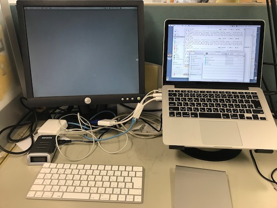

13時過ぎに起きて牛乳とヨーグルトを買い、院生室へ。 終日研究成果の最適化を試みる。あまりよくない結果が出たが、想定通りなのでここからどうするか、という所。
あとキーボードが届き、めでたく首がもげないための作業環境が院生室に完成した。

スタンドはTwelve South Curve Stand for MacBook、Magic Trackpad はバイト時代に買った初代（乾電池式）、Magic Keyboardは新しいやつ。 ディスプレイは計算機室で拾った1。 本当はこの横にこれ見よがしにiPad Proが置いてあるのだが、置いたのは後なので写真に移らなかった。 ケーブルがモジャモジャ出て行て汚ないのがかなしい。父は配線が得意で、こういうのを巧いことなるべく見えないように処理出来るんだけど、私にその技は受け継がれなかった。
今夜は雑な冷やし中華を喰った。
普段はトマト入れるんだけど忘れていた。適当にラー油と粉チーズを振って誤魔化した所、美味しく頂けた。 卵の黄身がなけなしのフォトジェニシティを担っているが、本当はただの茹で卵になるつもりで、茹で卵と麺を同時に茹でるのに恰度良い鍋が二つもなかった。 なので中途半端に茹でたら黄身と白身が綺麗に分離し、白身は殻に総取りされて、黄身だけ頂くことになったのである。
NHKの春の番組改変はけっこう良くって、まずニュースチェック11からツイート欄が消えた。 ツイート欄に出て来たアカウントを自動ブロックするためだけに機械学習を勉強しようかと思っていたが、それには至らずよかった。 あと早めにニュースが終わって、早めに時論公論が始まるようになり、時論公論が終わってから2355が観れるようになった。 これまでは時論公論は日付を跨いで放映されていて、始まって5分くらいたったら2355がはじまるので、最後まで時論公論が観れなかった。 別に毎日時論公論観なくてもいいんだけど、最後まで観れるならまあそれに越したことはない。
うたったうた
院生室は人がいたので、帰って調理・洗い物をしながらうたった。
- ウルフルズ「いい女」
- 井上陽水「Just Fit」「少年時代」
- 筋肉少女帯「マタンゴ」
風呂で唄った：
- The Beatles “I Me Mine”
って書くと比喩とシャレの解らない人が不正利用だと騒ぎ立てそうだ。ちゃんと利用許可を取ってあります。↩︎